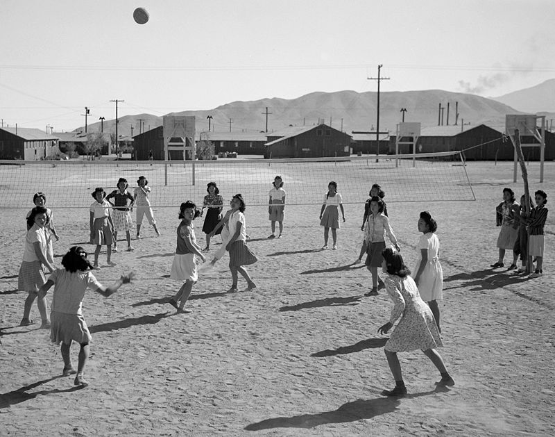

WELCOME TO MY FIRST WEBSITE
REFINEMENTS AND LATER DEVELOPMENTS.
REFINEMENTS AND LATER DEVELOPMENTS

|
- The first official ball used in volleyball is disputed; some sources say Spalding created the first official ball in 1896, while others claim it was created in 1900.[11][12][13] The rules evolved over time: in 1916, in the Philippines, the skill and power of the set and spike had been introduced, and four years later a "three hits" rule and a rule against hitting from the back row were established. In 1917, the game was changed from requiring 21 points to win to a smaller 15 points to win. In 1919, about 16,000 volleyballs were distributed by the American Expeditionary Forces to their troops and allies, which sparked the growth of volleyball in new countries.[11]
The first country outside the United States to adopt volleyball was Canada in 1900.[11] An international federation, the Fédération Internationale de Volleyball (FIVB), was founded in 1947, and the first World Championships were held in 1949 for men and 1952 for women.[14] The sport is now popular in Brazil, in Europe (where especially Italy, the Netherlands, and countries from Eastern Europe have been major forces since the late 1980s), in Russia, and in other countries including China and the rest of Asia, as well as in the United States.[8][9][14]
A nudist/naturist volleyball game at the Sunny Trails Club during the 1958 Canadian Sunbathing Association (CSA) convention in British Columbia, Canada
Beach volleyball, a variation of the game played on sand and with only two players per team, became a FIVB-endorsed variation in 1987 and was added to the Olympic program at the 1996 Summer Olympics.[11][14] Volleyball is also a sport at the Paralympics managed by the World Organization Volleyball for Disabled.
Nudists were early adopters of the game with regular organized play in clubs as early as the late 1920s.[15][16] By the 1960s, a volleyball court had become standard in almost all nudist/naturist clubs